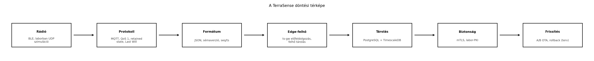

A záróprojektben a TerraSense-rendszer már együtt fut: az eszköz, a
gateway, a broker, a backend, a TimescaleDB, a Grafana és a labor-PKI
mind a ~/iot-labor/stack/compose.yaml környezetből
reprodukálható. A mérnök számára a legnagyobb kockázat ekkor már nem
egy-egy API vagy protokoll ismerete, hanem az, hogy a sok laborban
meghozott döntésből melyik miért született, és egy új telephelyen, egy
megváltozott követelmény vagy egy biztonsági észrevétel esetén hogyan
kell újra dönteni. A Záróprojekt: a teljes
TerraSense rendszer összeállítása és átvétele alfejezet után ez az
összefoglaló éppen azt a célt szolgálja, hogy a konkrét
TerraSense-döntéseket újrahasznosítható tervezési tudássá alakítsa.
Definíció. A döntési térkép olyan dokumentált navigációs eszköz, amely egy IoT-rendszer fő architekturális kérdéseit döntési pontokra bontja, mindegyik ponthoz hozzárendeli az értékelhető opciókat, a döntést befolyásoló kritériumokat és az adott projektben választott megoldást. A döntési térkép nem egyszeri recept, hanem újrafelhasználható gondolkodási váz, amelyet egy új telephely, új szenzortípus vagy új üzemeltetési modell esetén újra kell járni.
Az alábbi folyamatábra a TerraSense fő döntési pontjait és a könyvben meghozott választásokat mutatja.

A lépések sorrendje nem merev, de kifejezi a legfontosabb összefüggéseket: a rádió erősen befolyásolja a használható protokollokat, a protokoll a kézbesítési garanciákat, a formátum a sémaverziózást, a biztonsági modell pedig az OTA és a flottakezelés kialakítását.
A döntési térkép fő sorait az alábbi táblázat foglalja össze.
| Döntési pont | Fő opciók | TerraSense-választás | Döntő szempont |
|---|---|---|---|
| Rádió | BLE, LoRaWAN, Thread/IP, Wi-Fi, mobil | BLE; laborban UDP | hatótáv, energia, adatsebesség, gateway jelenléte |
| Protokoll | MQTT, CoAP, LwM2M, Modbus/OPC UA | MQTT, QoS 1 (a broker 5-képes; a kliensek 3.1.1/5 szinten is csatlakoznak) | pub/sub broker, QoS, retained, Last Will, integráció |
| Formátum | JSON, CBOR, Protocol Buffers, SenML | JSON, sémaverzió | olvashatóság, tooling, eszközkorlátok |
| Edge/felhő munkamegosztás | eszköz, gateway, felhő | gateway szűrés, felhő tárolás | késleltetés, offline működés, sávszélesség |
| Tárolás | relációs, idősoros, stream | PostgreSQL + TimescaleDB | idősorlekérdezések, megőrzés, SQL |
| Biztonság | TLS/mTLS, DTLS, secure boot | mTLS MQTT, labor-PKI | eszközméret, PKI üzemeltetés, fenyegetésmodell |
| Frissítés | delta, A/B, fokozatos kiadás | A/B OTA rollback (terv; a laborban nem implementált) | megbízhatóság, flash méret, visszagördülés |
A döntési térkép a választásokat mutatja, nem a megvalósítás
állapotát. A záróprojekt végleges üzenetszerződése ezért külön
táblázatban szerepel, mert a korábbi laborok részleges konvenciói
(például a retained telemetria vagy a
node_id+seq kulcs) itt nem érvényesek.
| Topic | Irány | QoS | Retain | Tartalom |
|---|---|---|---|---|
terrasense/<site>/<node>/telemetry |
node → gw → broker → backend | 1 | false | kind=telemetry esemény, measurements
objektummal |
terrasense/<site>/<node>/state |
node → gw → broker → backend | 1 | true | kind=state, valve_open |
terrasense/<site>/<node>/status |
gw → broker | 1 | true | jelenlét (online/offline); a
ts-gw publikálja (online az első csomagnál,
offline N kimaradt periódus után), a gateway saját kiesését
a gateway Last Will retained üzenete jelzi |
terrasense/<site>/<node>/cmd |
backend → broker → gw → node | 1 | false | parancs (valve.open/valve.close,
duration_ms) |
terrasense/<site>/<node>/cmd/result |
node → gw → broker → backend | 1 | false | nyugta
(ACCEPTED/SUCCESS/FAILED,
id) |
A telemetria retain=false szabálya tudatos: a retained
telemetria a brokerben maradó utolsó mintát jelentené, amelyet egy későn
csatlakozó fogyasztó tévesen friss mérésként dolgozhatna fel. A retained
állapot a state és a status topicra való, ahol
az utolsó ismert állapot éppen a kívánt viselkedés. A labor UDP-alapú
node-szimulátora nem állít be MQTT Last Willt; a
status/Last Will sor a konvenció része, a hardveres node
feladata, ezért az átvételi tesztek ezt nem igazolják.
Eseményazonosság. Egy telemetriaesemény azonosítója
a (site, node_id, boot_id, seq) négyes; az adatbázisban
ehhez a mérési típus és az eseményidő is hozzátartozik, ezért a végleges
egyedi kulcs
(site, node_id, boot_id, seq, measurement_type, ts). A
site a rövid node-nevek ütközését, a boot_id a
seq újraindulás utáni újrakezdését kezeli. Egy esemény a
hosszú táblában három mérési sort hoz létre, ezért az üzenetszámot
count(DISTINCT seq) adja, nem a sorok száma.
Megvalósított, szimulált és tervezett képességek. A döntési térkép ne legyen félreérthető: a záróprojekt nem minden döntési pontot valósít meg teljes mélységében.
| Képesség | Állapot a záróprojektben |
|---|---|
| BLE-rádió | szimulált: a laborban UDP helyettesíti |
| MQTT broker, QoS 1, retain, ACL | megvalósított (Mosquitto 2.0.18) |
| MQTT 5 | a broker támogatja; a labor kliensei 3.1.1-en is csatlakoznak; a szerződés nem használ MQTT 5-specifikus funkciót |
| Telemetria, parancs, nyugta és szelepállapot | megvalósított |
| Idempotens ingest, store-and-forward | megvalósított |
| Eszközárnyék | megvalósított, de memóriabeli |
| Grafana riasztás és webhook | megvalósított |
| Node-X.509 és node-szintű mTLS | tervezett: a node UDP-szimulátor |
| A/B OTA és rollback | csak modell és terv (OTA-frissítés: A/B képek, rollback, delta, fokozatos kiadás); a záróprojekt stackben nincs OTA |
| Hardveres fail-safe | tervezett |
| REST-hitelesítés | nincs a laborban; tervezett |
| Hétnapos üzem, 99,9%-os rendelkezésre állás | nem igazolt |
A táblázat állapotai összhangban vannak a záróprojekt követelmény-nyomonkövetési mátrixával; ahol a labor csak részbizonyítékot ad, ott a mátrix „részben igazolt” vagy „nem igazolt” állapotot használ.
Az IoT-döntések ritkán hozhatók meg egymástól függetlenül. A rádió kijelöli a megengedhető energia- és adatkeretet, ezáltal szűkíti a protokollválasztékot; a protokoll meghatározza a lehetséges kézbesítési szemantikát; a formátum és a sémaverziózás a későbbi evolúció költségét; az edge/felhő munkamegosztás pedig a rendszer offline tűrőképességét. A biztonsági modell nem utólagos réteg, hanem a provisioning, a kommunikáció és az OTA közös alapja.
A TerraSense döntéseinek indoklása:
native_sim nem modellez valós rádiót.seq/ts/node_id mezők és az
explicit sémaverzió teszik evolválhatóvá a telemetriát.A döntési térkép használata során minden döntési pontnál fel kell tenni a következő kérdést: mi változott a TerraSense-hez képest? Ha például egy új telephelyen nincs helyi gateway, a BLE helyett LoRaWAN vagy mobil IP lehet szükséges; ha az energia évtizedes elemélettartamot követel, a protokoll- és formátumválasztás a CoAP/CBOR irányába tolódhat el. A térkép célja tehát nem az, hogy a TerraSense-választást erőltesse, hanem hogy a kompromisszumokat láthatóvá tegye.
A döntési térkép a mit válasszunk, az ellenőrzőlista a teljes-e a megvalósítás kérdésére válaszol. A lista a könyv korábbi „Továbbvitt eredmény” jelölésű döntéseire épül, ezért a záróprojekt átvétele előtt minden sorhoz bizonyítékot kell rendelni.
Azonosítás és idő. Minden telemetriaüzenet
tartalmazza a kind, schema_version,
site, node_id, boot_id,
seq és ts mezőt; a ts UTC, epoch
ms, a boot_id a bootpillanatot azonosítja. A topic a
terrasense/<site>/<node>/telemetry konvenciót
követi, a seq pedig a (site, node_id, boot_id)
hármon belül monoton. Ellenőrzés: a Adatformátumok:
JSON, CBOR, Protocol Buffers, SenML és az Idő az
IoT-ban: időbélyeg, időszinkron, sorrend alfejezetek szerint.
Protokollgaranciák. A nem veszíthető adatok MQTT QoS
1 szinten közlekednek. A végleges konvenció: telemetry QoS
1, retain=false; state QoS 1, retain=true;
status QoS 1, a Last Will üzenet retained; cmd
és cmd/result QoS 1, retain=false. A labor brokerje
perzisztencia nélkül fut, ezért a munkamenet-állapot és a retained
üzenetek a broker újraindítását nem élik túl; ezt a node állapotüzenete
és a gateway store-and-forward puffere kompenzálja. Ellenőrzés: MQTT QoS, munkamenetek, retain, Last Will és MQTT
5.
Formátum és séma. Az üzenet explicit sémaverziót hordoz; a fogyasztó a régebbi sémaüzeneteket is értelmezi, vagy a verzió alapján elutasítja. Ellenőrzés: Sémák és verziózás: kompatibilis változtatások.
Idempotens ingest. A backend ugyanazt az eseményt
at-least-once kézbesítés mellett sem tárolja kétszer; a deduplikáció a
(site, node_id, boot_id, seq, measurement_type, ts) kulcson
alapul. A site és a boot_id azért kell, mert a
rövid node-nevek telephelyek között ütközhetnek, és a seq
újraindulás után nulláról indul. Ellenőrzés: Ingest:
MQTT-ből a backendbe, idempotensen.
Store-and-forward. A ts-gw offline időszakban puffereli a telemetriát, majd visszatölt; a puffer felső korlátja és a korlát túllépésének kezelése dokumentált. Ellenőrzés: Store-and-forward: offline működés és visszatöltés.
Biztonság. Nincs nyílt, hitelesítés nélküli brokerport; a kapcsolat mTLS-t használ; az eszköz rendelkezik egyedi identitással; nincs gyártói alapértelmezett jelszó. A laborban a gateway és a backend mTLS-e igazolt, a node UDP-szimulátor azonban nem rendelkezik saját X.509-tanúsítvánnyal, ezért a node-szintű identitás a hardveres fázis követelménye. Ellenőrzés: Eszközidentitás: X.509-tanúsítványok, PKI és kulcstárolás és Biztonságos kapcsolat: TLS 1.3, mTLS és DTLS az MQTT/CoAP alatt.
Frissítés. A tervezett firmware A/B vagy azzal egyenértékű frissítést és rollbacket támogat; a kép aláírt; a fokozatos kiadás lehetősége adott. A záróprojekt stack nem tartalmaz OTA-komponenst, ezért ez a sor a laborban nem igazolható, csak az OTA-frissítés: A/B képek, rollback, delta, fokozatos kiadás modellje és a követelmény rögzített.
Megfigyelhetőség. A naplók UTC-ben készülnek; a
metrikák elérik az üzemeltetőt; az eszközök állapota a dashboardon
látható. A labor UDP-szimulátora és a BLE-s hardveres node sem
MQTT-kliens, ezért node-onkénti Last Willt nem állíthat be; a
node-onkénti status üzenetet a ts-gw
publikálja, a gateway saját kiesését pedig a gateway Last Willje jelzi.
Ezt a node-jelenlét-funkciót a záróprojekt nem valósítja meg, ezért az
átvételi tesztek nem igazolják. Ellenőrzés: Megfigyelhetőség végponttól végpontig: metrikák,
naplók, nyomkövetés.
Reprodukálhatóság. A teljes TerraSense a
~/iot-labor/stack/compose.yaml és a záróprojekt
laborfájljaiból újraépíthető; az átvételi tesztek futtathatók, és nem
szorulnak manuális varázsváltozókra. Ellenőrzés: Záróprojekt: a teljes TerraSense rendszer összeállítása
és átvétele.
A lista nem a laborok könyvelése, hanem kockázatcsökkentő eszköz: ha egy sorra nincs bizonyíték, a hiányzó komponenst még a záróprojekt lezárása előtt vissza kell vezetni a megfelelő alfejezetbe.
Az ellenőrzőlista használata akkor hatékony, ha minden sorhoz konkrét
futási bizonyítékot rendelünk: az azonosítás és idő sor a
telemetry táblából kinyert JSON-üzenet, a
protokollgaranciák a Mosquitto logja és a T4 mTLS-teszt, az idempotencia
a backend-teszt adatbázisállapota, a frissítés sora pedig az OTA-frissítés: A/B képek, rollback, delta, fokozatos
kiadás modelljére hivatkozik, mert a záróprojekt stack nem tartalmaz
OTA-t. Ha az átvételi tesztek egy részlete „zöld”, az még nem jelenti
azt, hogy a lista teljes: a záróprojektben gyakran a pozitív főút van
tesztelve, a hiba- és offline utak nincsenek.
Tipikus ellenőrzési tünetek:
| Tünet | Valószínű ok | Javítás |
|---|---|---|
| A Grafana-diagram hőmérsékletgörbéje kettőződik | QoS 1 újbóli kézbesítés, nincs deduplikáció | idempotens ingest a
(site, node_id, boot_id, seq, measurement_type, ts)
kulcson; a hosszú táblában eseményenként három sor várható |
| Az eszköz telemetriája a brokeren megjelenik, de a backend nem látja | topic-névtérés, rossz site/node tag | topic-konvenció ellenőrzése |
| Az offline gateway visszatöltése eltolt időbélyegeket ír | az eszköz a helyi időt szövegként konvertálja, az óra nincs
szinkronizálva, vagy a gateway a feldolgozás idejét írja a
ts helyére |
ts UTC epoch ms a szinkronizált falórából; a
feldolgozási idő külön server_ts mezőbe kerüljön |
| A MOSQUITTO külső hálózatról elérhető, nincs TLS | alapértelmezett konfiguráció maradt nyitva | csak mTLS-listener, labor-CA |
A hibakeresés során mindig az adatút mentén haladjunk: eszköz → gateway → broker → ingest → tároló → dashboard. Ezzel a sorrenddel a hiba gyorsan beszűkíthető egy rétegre.
Falióra, monoton óra és időzóna összekeverése. A
ts mezőhöz a falióra (wall clock) UTC epoch ms értéke kell;
a fejlesztői laptop vagy a node rendszerórája önmagában nem hiba, ha
megfelelően szinkronizált (például NTP-vel) és UTC-ben adja az
epochértéket. A hiba a hibás konverzió, az elállított vagy nem
szinkronizált óra, illetve a helyi idő szövegként való beírása. A
monoton óra (például CLOCK_MONOTONIC) az
intervallumméréshez és az időkorlátokhoz való, nem eseményidőbélyeghez,
mert nincs rögzített epochja. A helyi időzóna csak megjelenítési kérdés:
ugyanaz az epochérték Budapesten és UTC-ben ugyanazt az eseményidőt
jelenti. A helyes szabály: eseményidő = UTC epoch ms a szinkronizált
falórából; megjelenítés = zónázott konverzió; a feldolgozási idő külön
mező (server_ts). A Idő az IoT-ban:
időbélyeg, időszinkron, sorrend alfejezetben tárgyalt szabályok itt
is kötelezőek.
QoS 1 idempotencia nélkül. Az MQTT QoS 1 garantálja
a legalább egyszeri kézbesítést, de nem garantálja a pontosan egyszeri
tárolást. Ha a backend minden PUBLISH-t feltétel nélkül beszúr, a
hálózati nyugtázás elvesztéséből vagy a gateway store-and-forward
visszatöltéséből duplikátumok keletkeznek. Az idempotens ingest és a
seq alapú deduplikáció nem kényelmi funkció, hanem az
elemzés helyességének feltétele.
A frissíthetőség hiánya. Egy IoT-rendszer akkor is sebezhető marad, ha ma minden teszt zöld, de a firmware vagy a gateway-szoftver nem frissíthető hibajavításra egy későbbi CVE után. Az A/B OTA, a rollback és a fokozatos kiadás az OTA-frissítés: A/B képek, rollback, delta, fokozatos kiadás alfejezetben bemutatott tervezési modell része; a záróprojekt laborban ezt nem implementáltuk, ezért a frissíthetőség a hardveres és produkciós fázis követelménye marad, nem a labor igazolt képessége.
Alapértelmezett jelszavak. A fejlesztői kényelemből nyitva hagyott névtelen MQTT-hozzáférés vagy gyári jelszó a legkönnyebb támadási felület. A TerraSense laborban ezért a belső broker is csak mTLS-listenerrel fut, és a labor-CA egyértelműen laborcélú. A Tipikus IoT-sebezhetőségek és a szabályozás alfejezetben bemutatott esetek jól mutatják, hogy a tömeges fertőzések ritkán igényelnek kifinomult kriptográfiai támadást.
Az alábbi feladatok önellenőrző kérdéssorként is szolgálnak.
gh2 telephelyen nincs BLE-gateway, csak egy LoRaWAN-átjáró
érhető el. Melyik TerraSense-döntési pontok változnak, és mely
ellenőrzőlista-sorok maradnak érvényben?~/iot-labor/i066/ átvételi tesztjeihez adj hozzá egy új
esetet, amely ugyanazt az MQTT-telemetriaüzenetet kétszer küldi be.
Milyen adatbázis-kulcsot és milyen asszertet kell használni az
idempotens ingest igazolásához?site,
node_id, boot_id és seq megegyező
értékkel kétszer publikálja. Az asszert azt ellenőrzi, hogy a
telemetry táblában az eseményhez pontosan három mérési sor
tartozik (nem hat), és az ingest naplója a második esetben deduplikációt
jelez. A mögöttes egyedi kulcs
(site, node_id, boot_id, seq, measurement_type, ts); a
node_id és seq pár nem elég, mert a
seq újraindulás után ismétlődhet, és a rövid node-nevek
telephelyek között ütközhetnek.seq-ek
hiányoznak-e a telemetry táblából
(generate_series a seq-tartományra). Ha
hiányoznak: adatvesztés, a gateway spoolja túlcsordult vagy eldobott
(store-and-forward sor). Ha megvannak, csak más időpontnál:
időbélyeg-hiba (helyi idő vagy óraeltolódás, esetleg a ts
helyére írt feldolgozási idő), ekkor az „Azonosítás és idő” sor sérül. A
puszta késleltetett visszatöltés helyes eseményidejű ts
mellett nem hagy tartós lyukat, mert a Grafana a ts szerint
rajzol.A döntési térkép hét fő pont köré rendezi a TerraSense-t: rádió (BLE,
laborban UDP), protokoll (MQTT, QoS 1; a broker 5-képes, a kliensek
3.1.1/5 szinten is csatlakoznak), formátum (JSON, sémaverzió),
edge/felhő munkamegosztás (ts-gw előfeldolgozás, felhő tárolás), tárolás
(TimescaleDB), biztonság (mTLS, labor-PKI) és frissítés (A/B OTA
rollback, csak tervezett). A tervezési ellenőrzőlista a korábbi
„Továbbvitt eredményekre” épül: azonosítás és UTC-idő,
protokollgaranciák, sémaverzió, idempotens ingest, store-and-forward,
mTLS, A/B rollback, megfigyelhetőség és reprodukálhatóság. A végleges
üzenetszerződés szerint a telemetria QoS 1, retain=false; a
state és a status retained; az esemény
azonossága (site, node_id, boot_id, seq), a tárolt egyedi
kulcs (site, node_id, boot_id, seq, measurement_type, ts).
A megvalósított, szimulált és csak tervezett képességek külön táblázata
megmutatja, hogy a node-X.509, az OTA, a hardveres fail-safe, a
REST-hitelesítés és a hétnapos üzemi igazolás nem része a labor
bizonyított eredményeinek. A leggyakoribb hibák: a falióra, a monoton
óra és az időzóna összekeverése, QoS 1 idempotencia nélkül,
frissíthetőség hiánya és alapértelmezett jelszavak. Az önellenőrző
kérdéssor azt igazolja, hogy az olvasó nemcsak a TerraSense-laborokat
tudja lefuttatni, hanem a döntéseket új követelményekhez is hozzá tudja
igazítani.
Ez az alfejezet nem vezet be új külső forrást vagy API-t. A döntési
térkép és az ellenőrzőlista a könyv korábbi alfejezeteinek
laboreredményeit és döntéseit összegzi; a szoftververziók a
~/iot-labor/stack/compose.yaml aktuális állapotából
olvashatók ki. Az iparági statisztikákat és szabályozási határidőket itt
nem ismételjük meg; azok a Tipikus
IoT-sebezhetőségek és a szabályozás, a Biztonságos kapcsolat: TLS 1.3, mTLS és DTLS az
MQTT/CoAP alatt és az OTA-frissítés: A/B képek,
rollback, delta, fokozatos kiadás alfejezetekben jelölt ellenőrzési
igények szerint kezelendők.